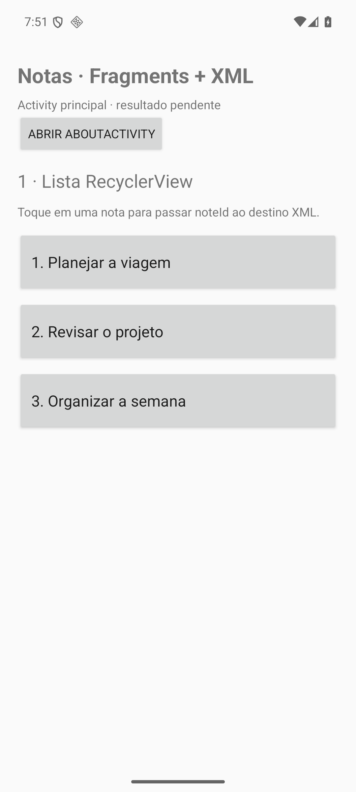
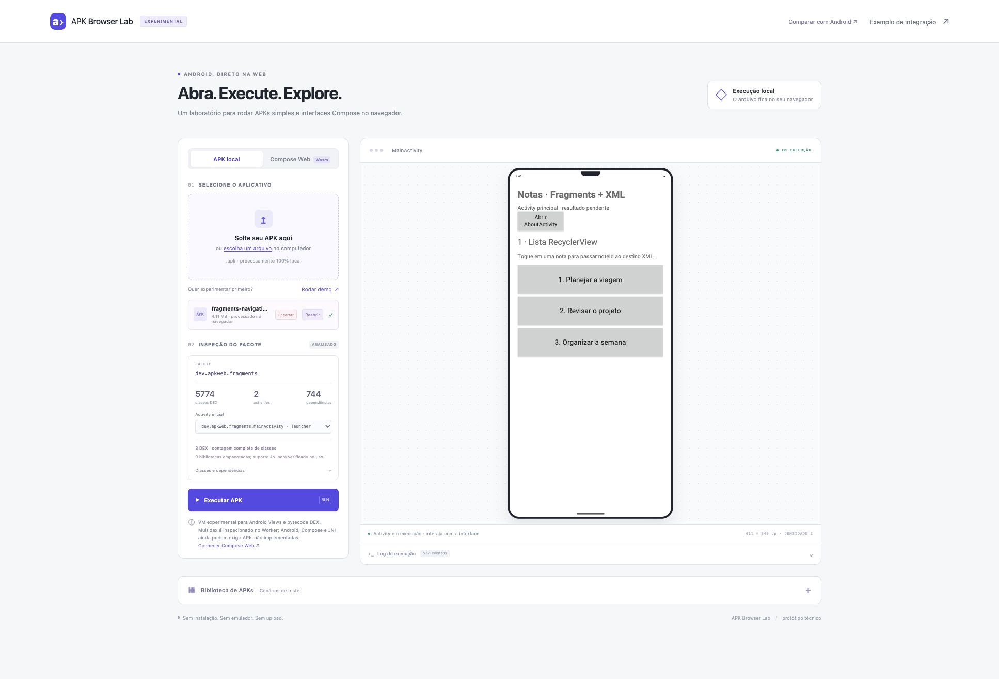
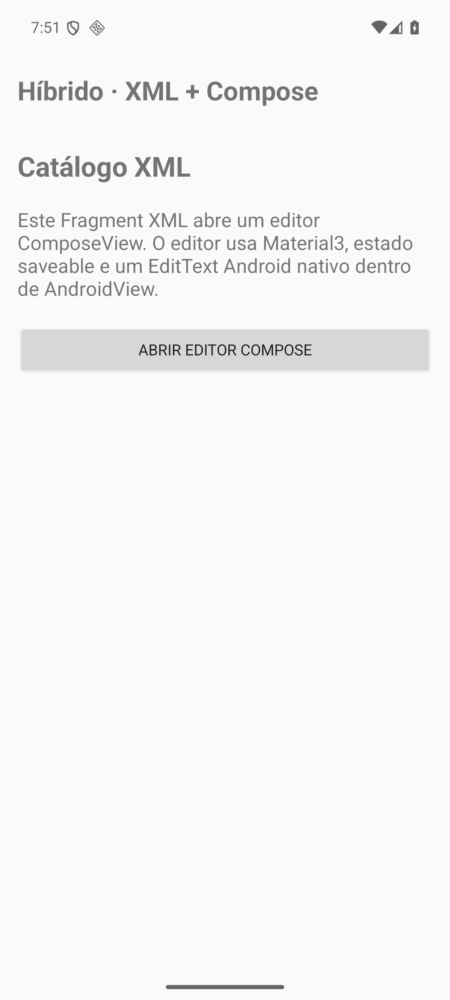
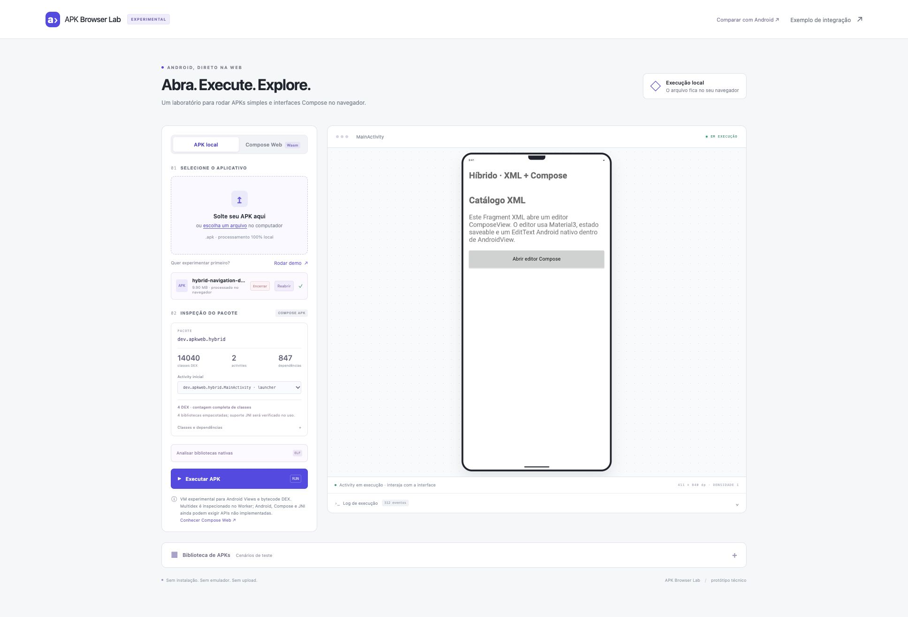

Mais código Android chegou à web.
Os arquivos Android são os mesmos nas duas execuções, conferidos por SHA-256. A web usa os métodos DEX do aplicativo e do AndroidX, com classes de plataforma compiladas do AOSP.
Fragments + Navigation XML
A lista RecyclerView e o detalhe executam o AndroidX do APK. O navegador confirmou o clique na nota e o retorno à lista.




XML + ComposeView
A tela inicial XML executa o NavHostFragment original. O clique inicia o código Compose, mas a tela do editor ainda não foi validada como funcional.




O que estas imagens demonstram
Capturas das telas iniciais: lista e navegação XML de Fragments, e catálogo XML do app híbrido. O detalhe da nota também foi aberto e capturado no navegador. Os relatórios distinguem uma tela que abriu de um fluxo completo aprovado.

Uma rodada posterior validou edição, confirmação, cancelamento, retorno à lista e ActivityResult do APK de Fragments no navegador: confirmação real, lista atualizada e resultado, evidência do fluxo. O editor Compose híbrido e os APKs Compose ainda têm dependências de plataforma em implementação. As capturas iniciais lado a lado acima não afirmam que esses fluxos Compose já funcionam. Consulte o diagnóstico atual e a evidência desta captura.


Fontes, estilos de widgets e barras de sistema diferem. O Android foi capturado em densidade 2,625; a VM usa densidade 1 e escala a prévia. O enquadramento usa CSS sobre as capturas completas, sem retoque ou alegação de igualdade pixel a pixel.